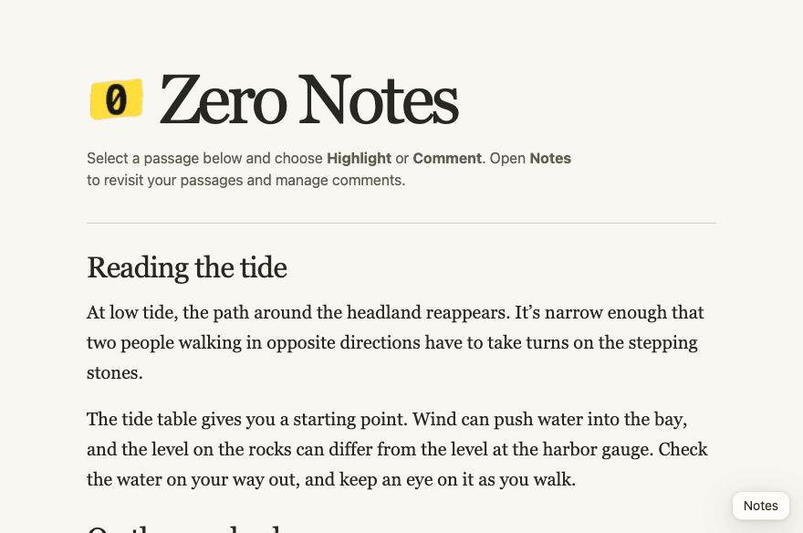

How To
Try the tools on this page, then use them on sites you read.
Highlight and comment
Select a few words below to try the floating toolbar.
At low tide, the stepping stones are visible. Check the water level again before heading back.
- Choose a color to highlight the text. Click a highlight to open its color picker again.
- Choose the comment icon to open a draft. Type a comment and select Post, or press ⌘+Enter (Ctrl+Enter on Windows and Linux). Commented text is underlined.
- Click a number on the page or choose Show notes to open the sidebar. Clicking the excerpt opens the note and jumps to its passage. Brackets mark the start and end of the open passage.
Watch the walkthrough

Work with saved notes
- Click a comment’s text to edit it. Choose Save or Cancel. Use the checkmark to resolve it, or open Resolved to reopen it.
- Use the link icon next to a passage to copy its text link. Use the copy icon in the sidebar header to copy the page’s notes as Markdown.
- Use the palette in the sidebar header to edit the five colors. Changing a color updates the highlights that use it. Reset restores the original colors.
- Choose Inline to keep notes near their passages, or Fixed to keep the list together.
- Use the trash icon to delete a note or the circled × to delete a comment. Select the same control again to confirm.
Chrome extension
- Install Zero Notes from the Chrome Web Store.
- Open Zero Notes from Chrome’s toolbar on a page you want to annotate. Select Enable and approve access for that site. Reload if the popup asks.
- Press Alt+Shift+N to turn notes on or off for the current site. Change the shortcut at
chrome://extensions/shortcuts.
Search the popup by page title or URL. Click a result to open that page.
Disable keeps your notes and turns off annotations on the site. Export site notes downloads JSON. Delete site notes… asks you to confirm before erasing the site’s notes.

Embed in a page
Download local-text-notes.js and place it beside your HTML file. Add this script tag inside <head> or before </body>.
<script defer src="./local-text-notes.js"></script>To limit annotations to one part of the page, add an attribute such as data-scope="article". The script saves notes in the visitor’s browser, under your site’s origin.
CLI and agents
Replace [site URL] and give this prompt to an agent on your computer.
Use the Zero Notes CLI to summarize my saved notes for [site URL]. Follow the CLI instructions at https://github.com/zahmadsaleem/zero-notes.